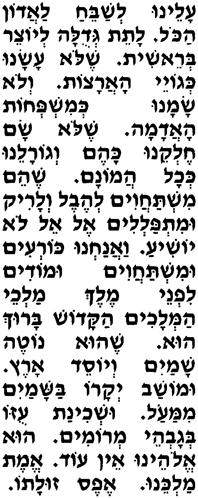
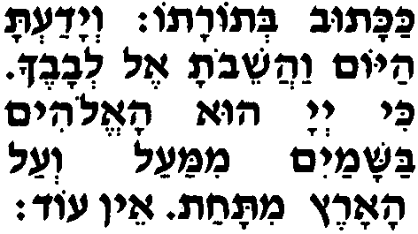

Алэну лешабэах ла-Адон аколь латэт гедула лейоцэр берэшит
На нас - обязанность восхвалять Владыку всего мира, возвеличивать Творца вселенной,
шэло асану кегойэй аарацот
Который не сделал нас подобными народам мира,
вело саману кемишпехот аадама
не создал нас похожими на племена земли,
шэло сам хэлкэну каэм вегоралэну кехоль амонам,
не дал нам такой удел, что и им, и такую судьбу, что и их скопищам.
шээм миштахавим леэвэль веларик умитпалелим эль эль ло йошиа.
Ибо они поклоняются суете и пустому, молятся тому, кто не спасет.
Ваанахну кореим умиштахавим умодим лифнэй Мэлэх малхэй амелахим аКадош барух у,
А мы преклоняем колена и падаем ниц, и благодарим Царя царей, Пресвятого, благословен Он,
шэу нотэ шамайим вейосэд арэц умошав йекаро башамайим мимааль ушхинат узо беговэй меромим.
Который расстилает небеса и основывает землю. Престол Его славы - в небесах наверху, а пребывание Его могущества - в высших высотах.
У Элоэну эн од, эмэт Малкэну эфэс зу-лато,
Он - наш Б-г, нет другого. Истина, что Он - наш Царь, кроме Него - никто.
какатув бе-Торато веядата айом ваашэвота эль левавэха
Как написано в Его Торе: "И узнай сегодня, и прими своим сердцем,
ки А-донай у аЭлоим башамайим мимааль веаль аарэц митахат эн од.
что Г-сподь есть Б-г на небесах вверху и на земле внизу; и нет другого".
|

 |